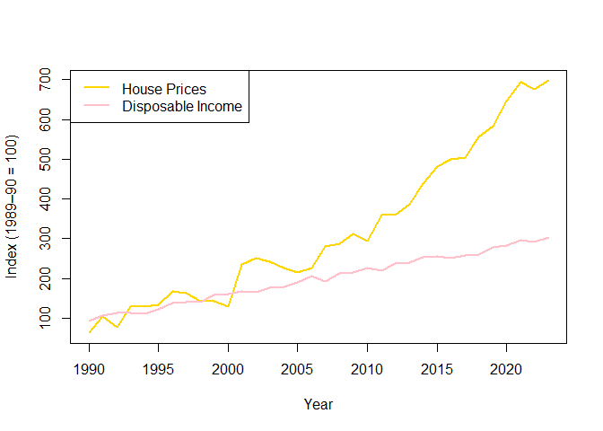

GoldinGroundOz is a small exploratory R package that demonstrates the long-term relationship between Australia’s detached house prices, household disposable income, and average capital gain rate changes. It provides two simulated datasets and illustrative examples that explore one of the hidden forces behind Australia’s surging housing prices — the shifting patterns of capital gain rates, or how “gold lies beneath the ground.”
Installation
See the full documentation and Shiny app demo on the pkgdown website 👇
🔗 GoldinGroundOz pkgdown site
Example
A simple example of exploring the included datasets:
library(GoldinGroundOz)
# Load the datasets
data("housepr_income")
data("capital_gain")
# Quick overview
head(housepr_income)
#> year income house_price
#> 1 1990 93.79697 62.51829
#> 2 1991 105.44149 103.79164
#> 3 1992 113.07616 76.21912
#> 4 1993 113.57105 128.17242
#> 5 1994 109.85777 129.47045
#> 6 1995 120.96476 134.05761
head(capital_gain)
#> year phase value
#> 1 1986-87 Before 50% capital gains discount 5887.859
#> 2 1987-88 Before 50% capital gains discount 2991.685
#> 3 1988-89 Before 50% capital gains discount 3131.357
#> 4 1989-90 Before 50% capital gains discount 3487.970
#> 5 1990-91 Before 50% capital gains discount 2885.084
#> 6 1991-92 Before 50% capital gains discount 5223.711
# Plot house prices vs disposable income
plot(
housepr_income$year, housepr_income$house_price,
type = "l", col = "gold", lwd = 2,
ylab = "Index (1989–90 = 100)", xlab = "Year"
)
lines(housepr_income$year, housepr_income$income, col = "pink", lwd = 2)
legend("topleft", legend = c("House Prices", "Disposable Income"),
col = c("gold", "pink"), lwd = 2)